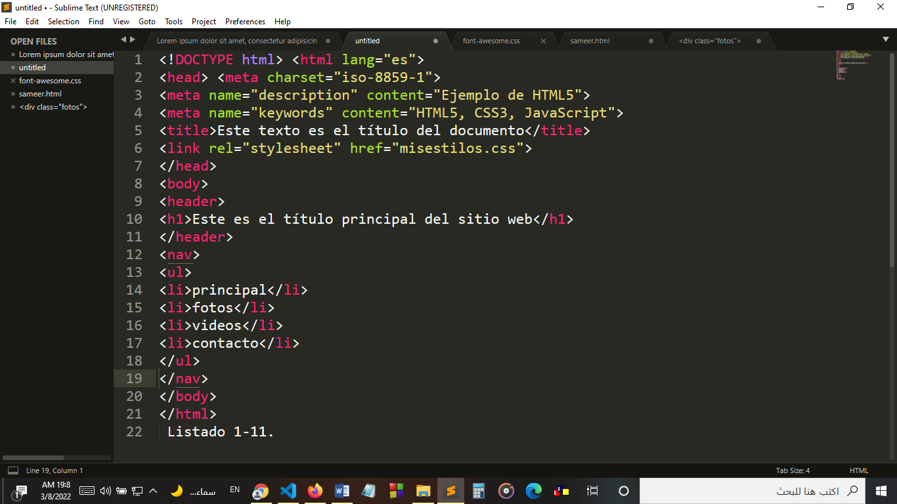

_ body structure body structure :
(the code between the body tags) will generate the visible part of the document. This is the code that will produce our web page.
HTML has always offered different ways to build and organize information within the body of a document. One of the first
elements provided for this purpose was table. Tables allowed designers to accommodate data, text, images, and
tools within rows and columns of cells, even if they were not designed for this purpose. In the first
days of the web, tables were a revolution, a huge step forward from viewing documents
and the experience offered to users. Later, gradually, other elements replaced its function, allowing to achieve
the same with less code, thus facilitating the creation, allowing portability and helping the maintenance of the
websites. The div element started to dominate the scene. With the emergence of more interactive websites and the integration of
HTML, CSS and Javascript, the use of div became a common practice. But this element, like table, does not provide
Too much information about the body part it's depicting. From images to menus, texts, links,
codes, forms, anything can go between the opening and closing tags of a div element.
In others
words, the div keyword only specifies a div in the body, like a table cell, but doesn't offer
any clue as to what kind of partition it is, what its purpose is, or what it contains. For users these
keys or clues are not important, but for browsers the correct interpretation of what is inside
of the document being processed can be crucial in many cases.
After the revolution of mobile devices and
the emergence of different ways that people access the web, the identification of each part of the document is a
task that has become more relevant than ever. Considering all the above, HTML4 incorporates new elements that help
identify each section of the document and organize the body of the document. In HTML5 the most important sections are
differentiated and the main structure no longer depends on the div or table elements.
How do we use these new
elements depends on us, but the keywords given to each of them help us to understand
its functions. Normally a page or web application is divided into several visual areas to improve
the user experience and facilitate interactivity. keywords that represent
each new HTML5 element is closely related to these areas, as we will see soon. Organization
Figure 1-1 represents a common layout found on most websites these days. In spite of the fact
Since each designer creates their own designs, in general we will be able to identify the following sections on each site
website studied
- Visual representation of a classic web design :
At the top, described as Header, is the space where the logo, title,
subheadings and a short description of the website or page. Immediately below, we can see the Navigation Bar
in which almost all developers offer a menu or list of links for the purpose of easy navigation
through the site. Users are guided from this bar to the different pages or documents, usually
belonging to the same website. The most relevant content of a web page is, in almost every design, located
in its center. This section features valuable information and links. Most of the time it is divided into several rows and
columns
only two columns: Main Information and Sidebar, but this section is extremely flexible and
normally designers adapt it according to their needs by inserting more columns, dividing each column
between smaller blocks or generating different distributions and combinations.
The content presented in this
part of the design is usually a high priority. In the example layout, Main Information might contain a
list of items, product descriptions, blog posts or any other important information, and the Toolbar
Lateral could display a list of links pointing to each of those items. In a blog, for example, the latter
column will offer a list of links pointing to each blog entry, information about the author, etc… In the
base of a classic web design we always find one more bar that here we call Institutional. we named her
in this way because this is the area where information about the website, the author or
the company, as well as some links regarding rules, terms and conditions and any additional information that
the developer considers it important to share. The Institutional bar is a complement to the Header and is part
of what is considered these days the essential structure of a web page.
- is a representation of a normal blog :
In this example, each part of the design considered above can be clearly identified. 1. Header 2.
Navigation Bar 3. Main Information Section 4. Sidebar 5. The footer or the Institutional bar It is simple
Representation of a blog can help us understand that each defined section on a website has a purpose. sometimes this
purpose is not clear but in essence it is always there, helping us to recognize any of the sections described
previously in all design. HTML5 considers this basic structure and provides new elements to differentiate and declare each
one of its parts.
- shows the typical design presented above :
but this time with the corresponding HTML5 elements for each section (including opening and closing tags). header
One of the new elements incorporated in HTML5 is header. The header element should not be confused with head used
before to build the document header. Like head, the intent of header is to provide information
introductory (titles, subtitles, logos), but differs from hea> in its scope. while the element
head is intended to provide information about the entire document, header is used only for the body
or specific sections within the body:
!DOCTYPE html html lang="es"
head
meta charset="iso-8859-1"
meta name="description" content="Ejemplo de HTML5"
meta name="keywords" content="HTML5, CSS3, JavaScript"
title Este texto es el título del documento /title
link rel="stylesheet" href="misestilos.css"
/head
body
header h1 Este es el título principal del sitio web /h1
/header>
/body
/html
- Using the header element :
we define the title of the page
web using the header element. Remember that this header is not the same as the one used previously for
define the title of the document. The insertion of the header element represents the beginning of the body and therefore
both of the visible part of the document. From now on it will be possible to see the results of our code in
the browser window. Do it yourself: If you followed the instructions from the beginning of this chapter
You should already have a text file created with all the codes studied so far and that's it
to be tested. If not, all you need to do is copy the code in Listing 1-10 into
an empty text file using any text editor (such as Windows Notepad, for
example) and save the file with the name of your choice and the html extension. To see the code at work, open the file
in an HTML5 compatible browser (you can do this by double-clicking on the file in your file browser). Concepts
basics: Among the header tags in Listing 1-10 is an element you probably don't know about. The h1 element is an old
HTML element used to define titles. The number indicates the importance of the title. The h1 element is the most important
and h6 the least important, therefore h1 will be used to display the main title and the others for
subtitles or internal subtitles. Later we will see how these elements work in HTML5.
- nav :
Continuing with our example, the next section is the Navigation Bar.
This bar is generated in HTML5 with the element
nav:

As you can see in Listing 1-11, the nav element
is inside the body tags but is placed after the
(/header), not inside header tags. This is because nav is not part of the header but a new section. Earlier we said that the structure and the order we choose to place the elements HTML5 depend on us. This means that HTML5 is versatile and only gives us the parameters and basic elements to work with, but how to use them will be entirely up to us. An example One of this versatility is that the nav element could be inserted inside the header element or in any another part of the body.
However, it should always be considered that these labels were created to provide information to browsers and help each new program and device on the market to identify the most relevant parts of the document. To keep our code portable and understandable, We recommend as a good practice to follow the standards and keep everything as clear as possible possible.
The nav element was created to provide navigation aids, such as in main menus. or large link blocks, and it should be used that way. Basics: In the example of Listing 1-11 we generate the menu options for our web page. between the labels nav there are two elements that are used to create a list. The purpose of the ul element is define the list. Nested between the ul tags we find several li tags with different texts representing the menu options. The li tags, like probably you've already noticed, they are used to define each item in the list.
El propósito de este book is not to teach you basics about HTML, if you need more information about elements regular users of this language visit our website and follow the links for this chapter.
- section :
Following our standard design, we find the columns that in Figure 1-1 we call Main Information and Sidebar. As explained above, the Main Information column contains the most relevant information in the document and can be found in different ways (for example, divided into several blocks or columns). Because the purpose of these columns is more general, the element in HTML5 that specifies these sections is called simply
section:
Using the element
section. Like the Navigation Bar, the Main Information column it is a separate section. For this reason, the section for Main Information goes below the closing /nav tag. Do It Yourself: Compare the last code in Listing 1-12 with the design in Figure 1-3 to understand how labels are located in the code and what section each of them generates in the visual representation of the web page. IMPORTANT: The tags that represent each section of the document are located in the code in the form of a list, one above the other, but on the website some of these sections will be placed side by side (the Main Info and Sidebar columns are a clear example). In HTML5, the responsibility for rendering elements on the screen was delegated to CSS. The layout will be achieved by assigning CSS styles to each HTML element. We will study CSS in the next chapter.
- aside :
In a typical web design (Figure 1-1) the column labeled Sidebar is located next to the Main Information column. This is a column or section that typically contains data that is related to the main information but is not relevant. or just as important. In a blog layout, for example, the Sidebar will contain a list of links. In the example of In Figure 1-2, the links point to each of the blog posts and provide additional information about the author (number 4). The information within this bar is related to the main information but is not relevant by itself. Following the same example we can say that the blog posts are relevant but the links and small reviews on those posts are just an aid to the navigation but not what the reader is really interested in. In HTML5 we can differentiate this secondary class of information using the element
aside
The aside element could be located on the right or left side of our example page, the tag does not have a position predefined. The aside element only describes the information it contains, not its place within the structure. this item it can be located anywhere in the design and be used as long as its content is not considered as the main content of the document. For example, we can use aside inside the section element or even inserted between the relevant information, as in the case of a citation.
- footer :
To finish the construction of the template or elemental structure of our HTML5 document, we only need one more element. We already have the header of the body, sections with help for navigation, important information and even a sidebar with additional data, so the only thing left for us to do is close our design to give the body of the document. HTML5 provides a specific element for this purpose called
footer
In the typical design of a web page (Figure 1-1) the section called Institutional will be defined by labels footer. This is because the bar represents the end (or foot) of the document and this part of the web page is normally used to share general information about the author or the organization behind the project. Generally, the footer element will represent the end of the body of our document and will have the purpose described above. However, footer can be used multiple times within the body to also render the end of different sections (in the same way as the header tag). We will study the latter feature later